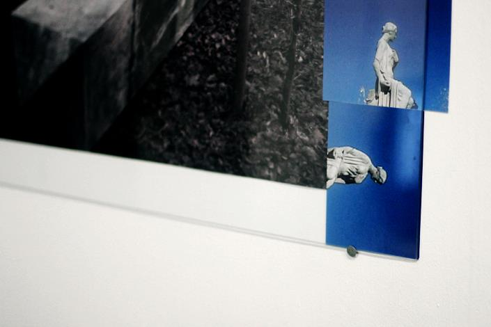
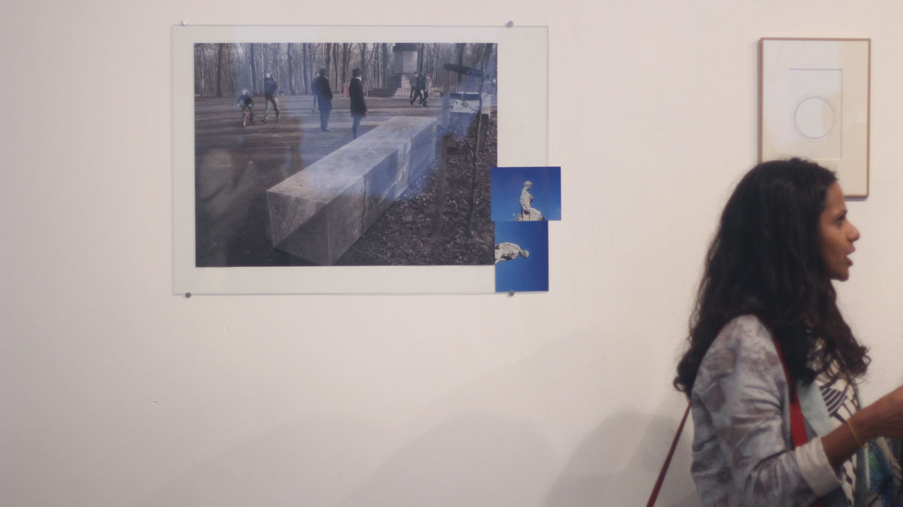
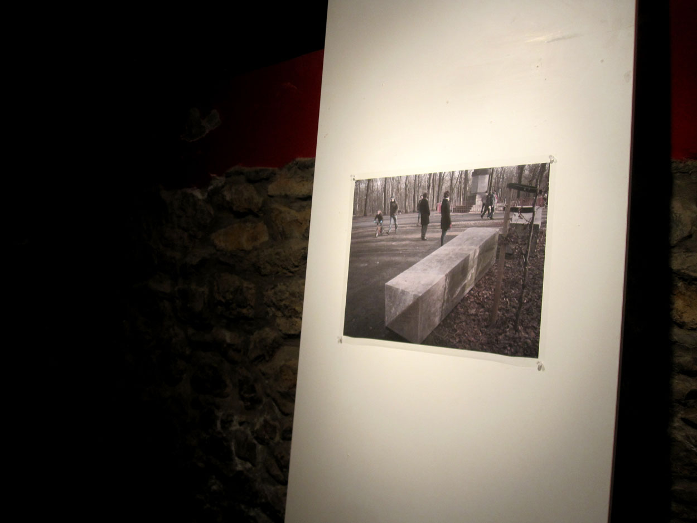
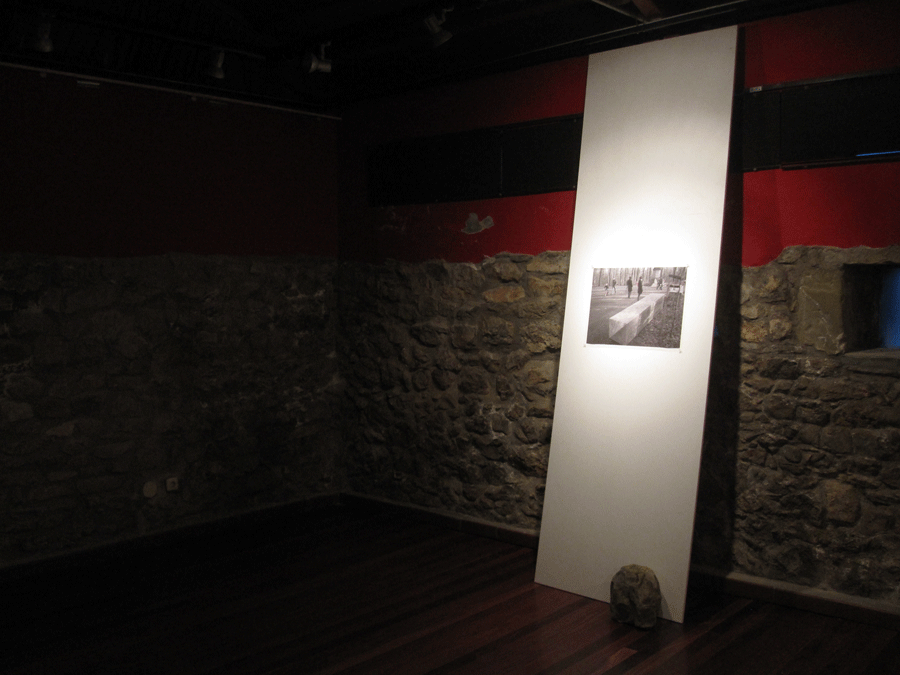
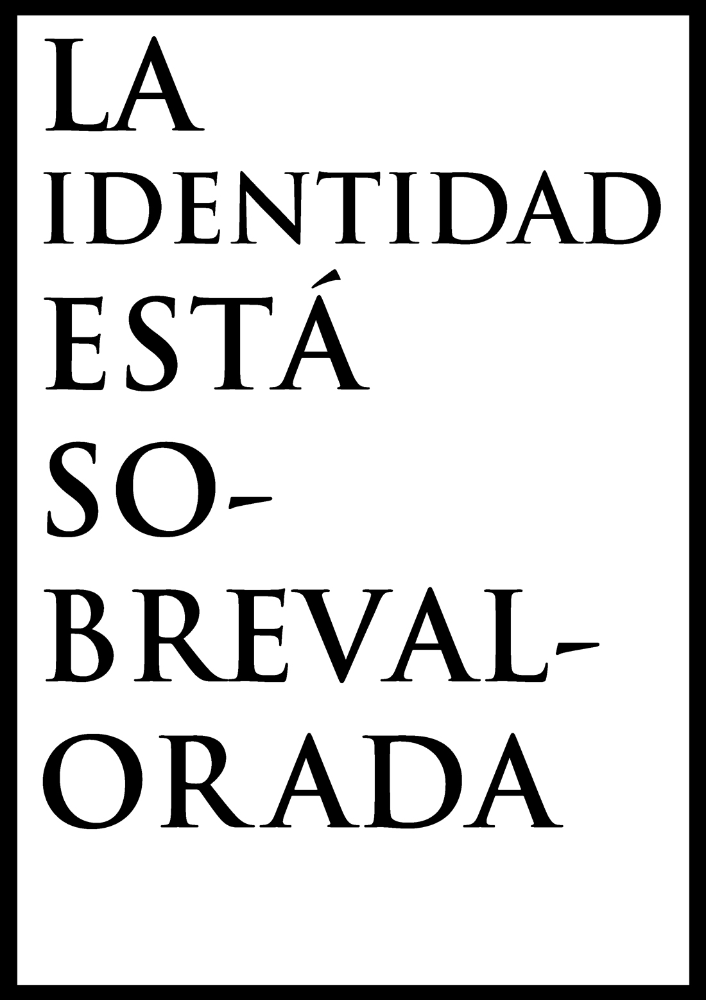
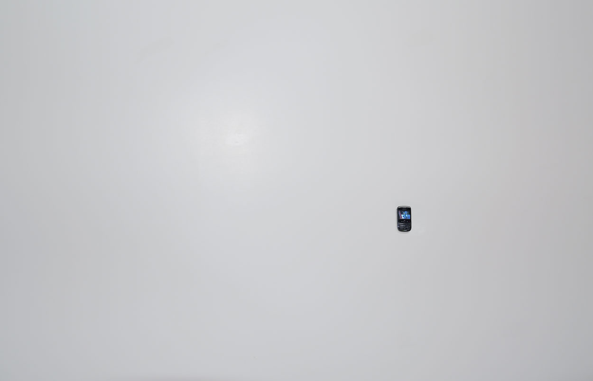
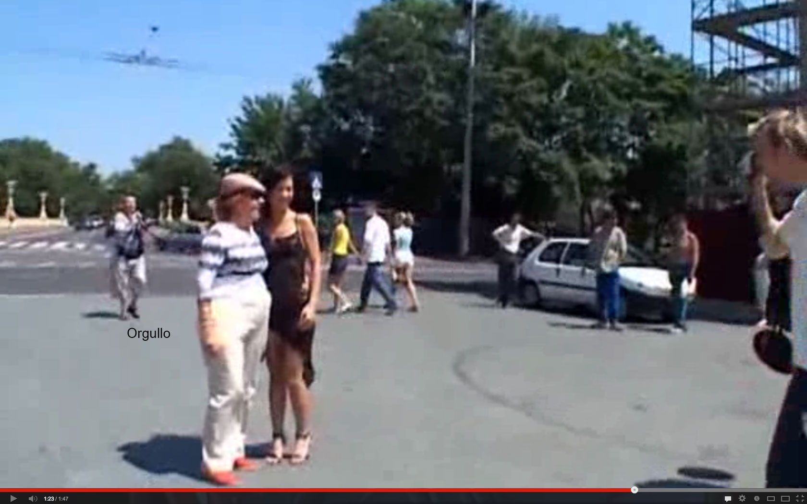
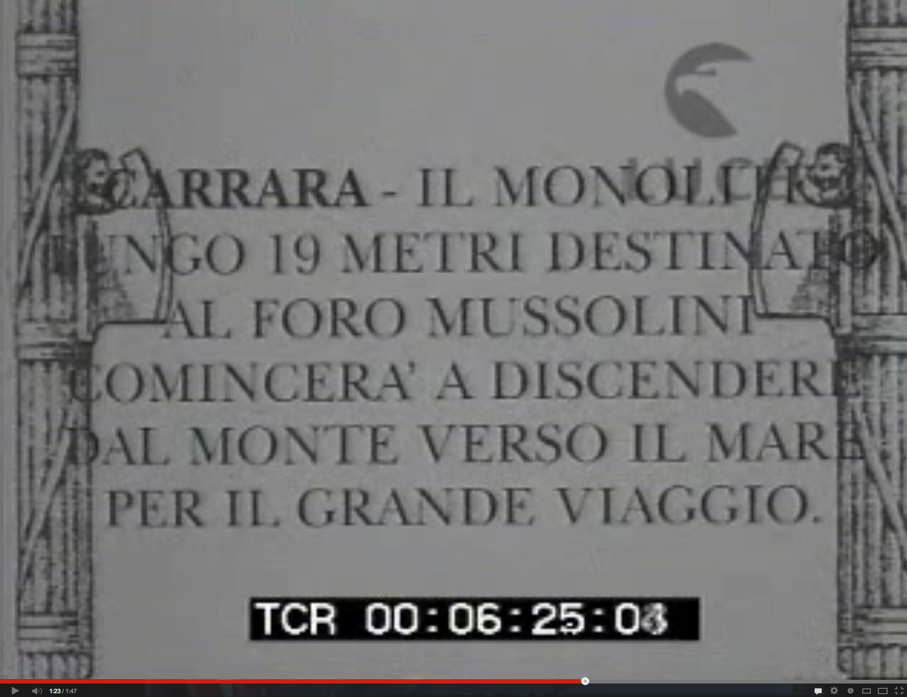
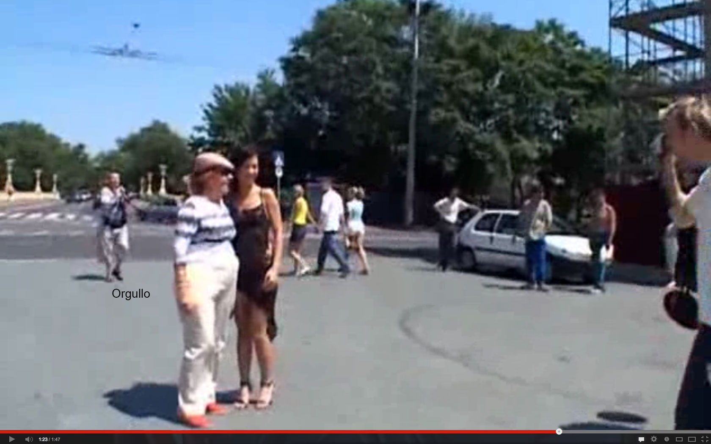
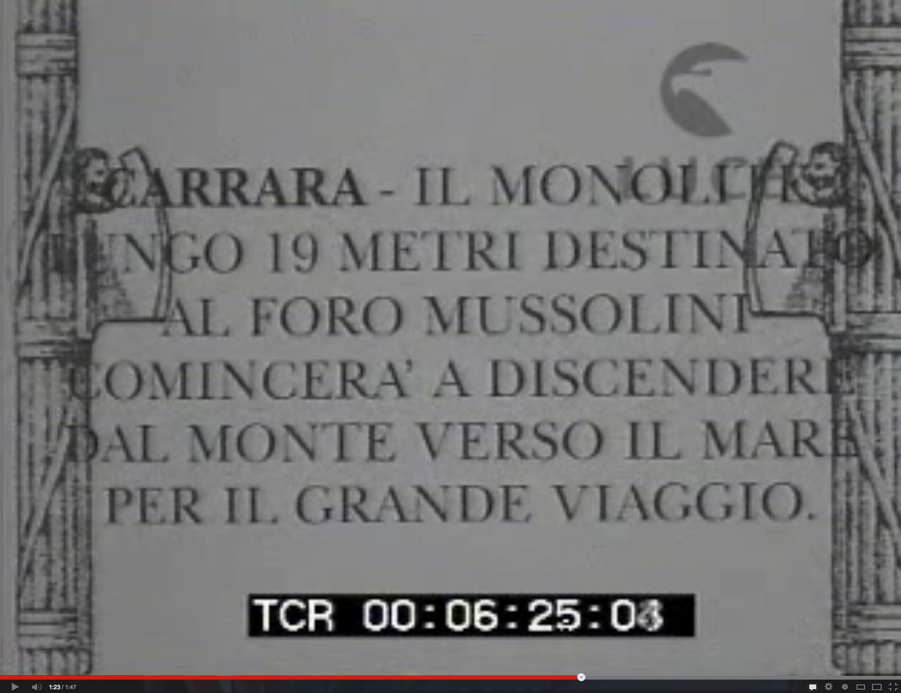

Details of the views at "Salon Flux #3 YPA @ Salon Flux", London 2013. UK - http://www.salonflux.com/index.php?/events/salon-flux-nr6-april-2013/

An obelisk has fallen with the intervention of the performance conducted by Jane Frances Dunlop & Mira Loew (picture by Lainey Richardson)
Views from "La identidad está sobrevalorada", El Torco 2012, Santander. Spain



« CE QUE JE SUIS », alors ? Traversé depuis l’enfance de flux de lait, d’odeurs, d’histoires, de sons, d’affections, de comptines, de substances, de gestes, d’idées, d’impressions, de regards, de chants et de bouffe. Ce que je suis ? Lié de toutes parts à des lieux, des souffrances, des ancêtres, des amis, des amours, des événements, des langues, des souvenirs, à toutes sortes de choses qui, de toute évidence, ne sont pas moi.
L’insurrection Qui Vient, Comité invisible.
Personal archive, 2012 - ongoing. Clips on a Blackberry device.

Archive by frames 00.09.12.png) 

↑